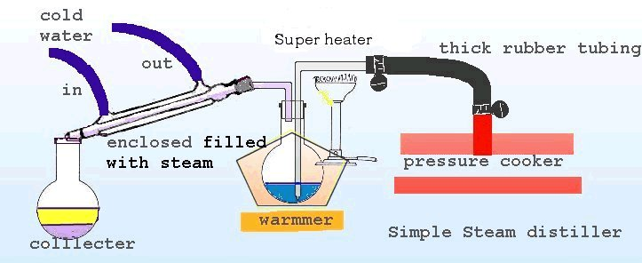

You will need these things, and no substitutions allowed!
If you can't get this shit, you ain�t ready to make the best Go-Go
in town!
This is a refinement of all methods, and the next step up from Push
Pull,
But nobody should be discouraged from attempting this, as you will
probably find it easier!
PH paper, isn't even necessary!
This post is one method from Go
to Whoah!
This post has to be followed from GO
to Whoah!
Otherwise you can run into trouble, as povidone is not removed in this
extraction!
It will be removed at the end! Each step was chosen to compliment the
next!
Understand?
Read on Doggs.....
So as we continue to do multiple toluene washes,
We will continue to test the toluene after pouring it off,
To see how we are progressing with the cleanup!
When we have reached a point where no crap comes out of the toluene,
With the addition of water, then we are ready to try acetone!
Usually about 3 boils in toluene, but of course it depends how much
your using!
So, as before we will add a portion of acetone and boil lightly!
Now when we pour off the acetone, we will add a tiny amount of water
and some NaOH
This is our final test, when you do this and no crap falls out of acetone
you are ready!
This will be the cleanest pfed you have ever seen, guaranteed!
AND, yields should be >90% if your careful! 95% is good

Index
Ok first prepare yourself an ice bath! Yes ice cubes and water in a
sink or bucket!
Now, many will say you should add this first or that first!
Well after much reading of different peoples methods, I say....
Chuck the whole shebang in together, while your flask is on ice,
Lift and swirl ingredients together, while maintaining on ice!
Put your condenser on top and start water running thru, from bottom
to top!
Now, the idea is to get the reaction going in the most controlled way
possible.
Now you want to let reagents react in the ice bath, if at all,
Then move vessel from ice bath to room temp,
If things look like they're going too fast, put back in ice bath,
You want to keep the reaction going but only at a nice slow, controlled
pace!
This is also necessary to control vapor in the condenser!
Thick and or dis-colored smoke is bad! and plumes of smoke will escape
from condenser
As things progress at a nice slow pace, as things slow too much you
can start applying heat!
So prepare an oil bath and bring to about 50c, now if there is no more
action in your vessel
You can move it to the oil bath, and same as before, when things slow
down,
Adjust heat up, to say 100c then 150c for one hour, to make sure reaction
has completed
The whole time you should be watching to keep a nice reflux going,
and not too much vapor is escaping from condenser!
Now remove from heat and disconnect condenser,
Now add ice water to quench reaction,
reason for ice water is to calm the reaction down when NaOH is added
Now its up to you if you want to filter out RP or leave till the end
I would leave it, it will be washed nicely by next process and be easier
to filter!
Now add lots of NaOH to bring reaction mix to positive 14PH
You cannot over-basify as meth won't be destroyed, its a tough MF!

Index
 Now
you need to set up your glassware for steam distillation!
Now
you need to set up your glassware for steam distillation!
So attach steam distillation sloping splash head to top hole of flask!
Now attach plastic hose to steam inlet and other end,
on release valve of pressure cooker that is full of water!
Now attach condenser on end of splash head, and rig up some kind of
prop for it to stay up!
Now place a jar at the end of condenser to catch our distillate!
Now you want to heat both the pressure cooker, and the reaction flask!
Now sit back and get ready for one of the most beautiful sites and
smells!
The meth free base that is sitting on the top of your aqueous layer
in flask
will vaporise and be carried across and be condensed in the condenser
and trickle down into your jar
It will sit atop a bottom layer of water!
After the last of the oil has come across, change jars and leave the
setup to run for another hour
Just to make sure you got it all!
Any povidone from the pills will be stuck behind in the reaction vessel
It has been noted that some polymer that may have been left from extraction,
may follow the steam!


Index
Enjoy, and do not attempt anything above, before you completely understand
what you are doing!
You must have a sound understanding of the basics first!
One Pissed Bee!

Index